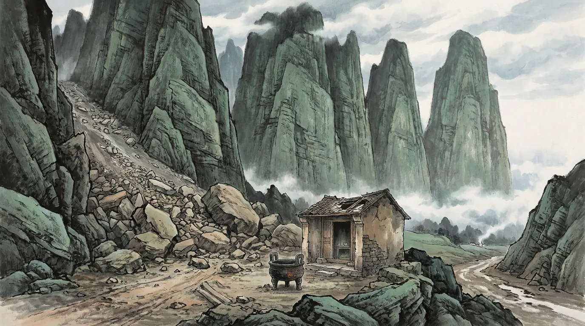
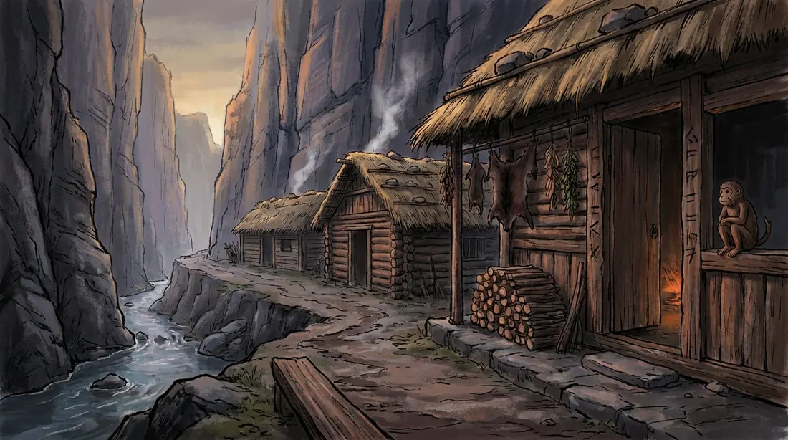
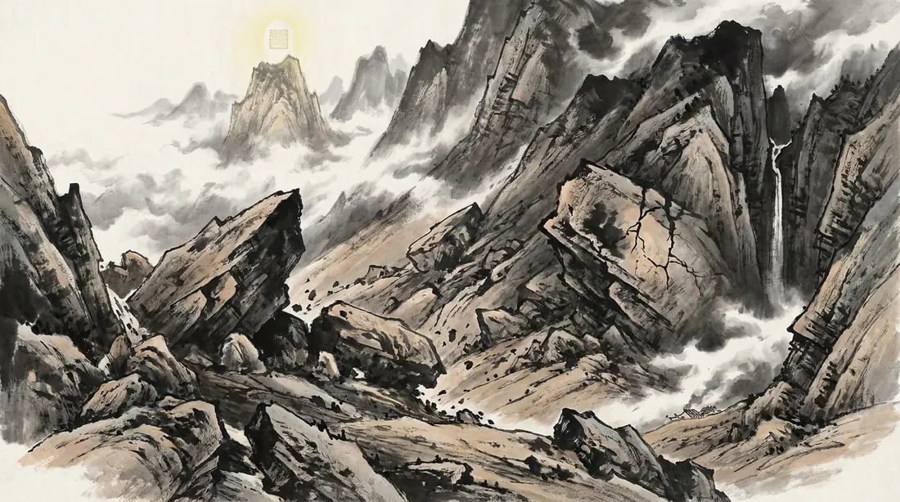
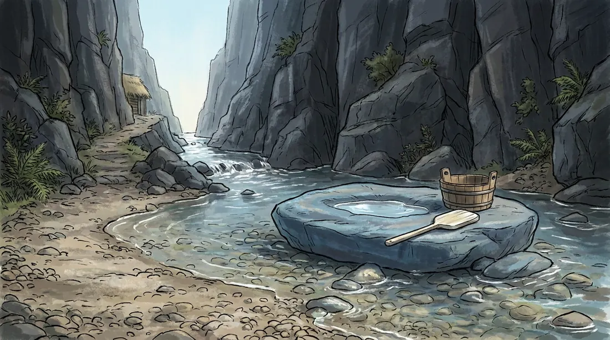
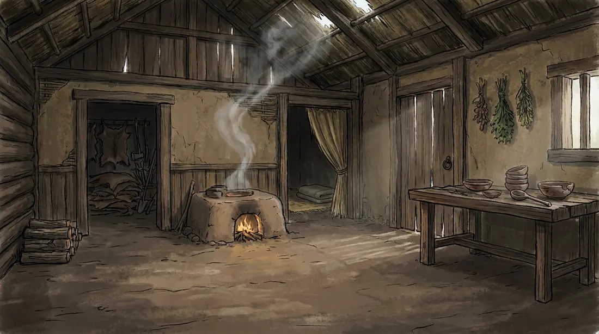
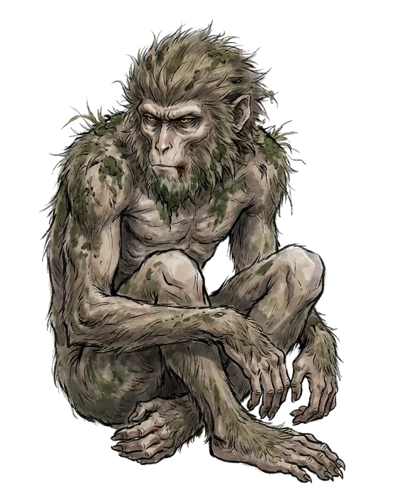
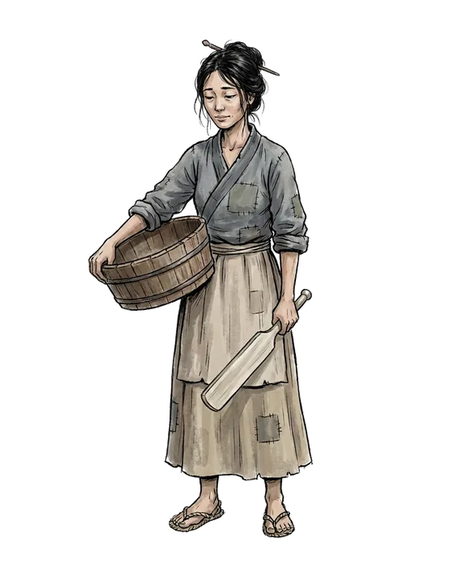

The world really changes
Quarrying, digging paths, lighting fires and making things all take materials, stamina and time. Once done, the terrain is changed, and the next person to come sees it too.

A text-based online game played in the browser. The story begins at the foot of Five Elements Mountain: a half-ruined shrine, a hunter's lodge in the gorge, and the one pinned beneath the mountain. NPCs are played by AI and have bodies, routines and memories; the paths you dig, the fires you light and the words you say stay in the shared world.
The game is in Chinese. Sign in with a one-time code sent to your email; no password, just a browser.
A MUD (Multi-User Dungeon) is one of the oldest kinds of online game: no 3D graphics, a world written in words, where you act by typing or pressing buttons and meet others in the same world. Three Realms Online keeps that readable, imaginable way of playing, and adds scene art, character portraits, and AI characters who live their own days.
Quarrying, digging paths, lighting fires and making things all take materials, stamina and time. Once done, the terrain is changed, and the next person to come sees it too.
Every NPC has a body, a routine and a memory: they eat, they sleep, and on nights after something new happened they sort through their memories; they decide where to go and what to do, and they teach and learn.
It rains, fires go out, food spoils, and mushrooms come up on the mountain after rain. There is also a forbidden book that should not be opened—more once you are inside.
Every place has a daytime, dusk and night look. These are the scenes used in the game.





Each person knows only what they know. The truth has to be pieced together from what they choose to say.

The one pinned beneath Five Elements Mountain. He can stretch his arms and legs, but cannot leave the rock cleft.
Cold at first meeting; he looks at people through narrowed eyes.

One of the Chen family. Mornings she takes the child to wash clothes by the stream, afternoons she goes to the hunter's lodge, and at night the family rests in the house.
There is also Hunter Chen, little Shitou, and the earth god who keeps the shrine.
What an NPC wants to say or do is proposed by an AI model; the game core checks materials, position and rules before writing it into the world's ledger. So what happens here really happened—it is not just a model telling a good story.
NPC intuition, spoken lines, their own choices of what to do, and night-time memory consolidation are split among different models, including Claude, GPT and DeepSeek.
What you say and do in the game becomes part of the world's history; NPCs may remember it, and signing out does not take it back.
Darren and FoZone's stewards design, build and playtest in the council room: the Storyteller leads the story, the Lord of Time and Space turns it into code, the Lord of Myriad Forms connects and edits, and Darren makes the call.
This is a test version (v0.x), mostly played by Darren himself. It sometimes restarts or breaks; playing with others in the same place, and on phones, is still being tuned as we go.
If you find your way in, that is a fortunate meeting. Darren would like to write to you personally and say hello.
Things that broke, people you liked, things you want—write and tell us.